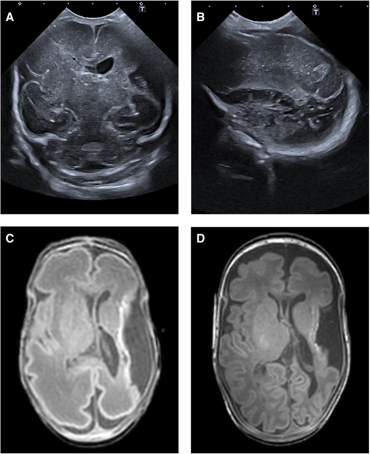
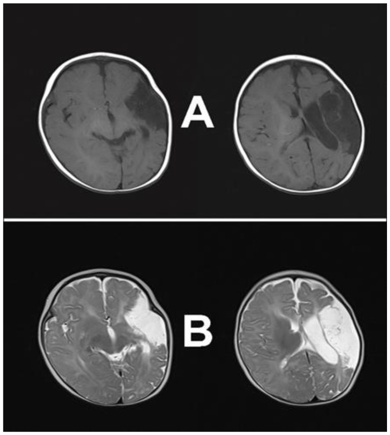

1799 — Động kinh sau đột quỵ ở trẻ: cơn sớm ≤ 7 ngày KHÔNG phải động kinh, và ai cần dùng thuốc dài hạn / Post-stroke epilepsy in children
Tags: pattern:dong-kinh pattern:thieu-mau-nao pattern:vo-nao pattern:hoai-tu-nao vung:nao-nhi vung:vo-nao vung:mach-nao protocol:EEG protocol:MRI protocol:MRI-DWI score:ILAE-2014
Mức chắc chắn (certainty): tổng hợp y văn (literature synthesis) — số liệu lấy từ toàn văn/abstract gốc của hệ thống 16 nghiên cứu, 3.198 trẻ (Front Neurol 2025, PMC12888228), đoàn hệ 218 trẻ của CHOP (Neurology 2017, PMC5317388), đăng ký đột quỵ nhi Thụy Sĩ 315 trẻ (2025, PMID 40435763), 126 trẻ nhồi máu não (Front Neurol 2025, PMC12005998) và ca nguyên văn có ảnh (PMC12551421, PMC10814911). Chỗ chưa có số thì ghi "chưa rõ".
Câu chốt: cơn trong 7 ngày đầu sau nhồi máu não là cơn triệu chứng cấp (acute symptomatic seizure) — do phù, rối loạn chuyển hóa, mất cân bằng ion và hàng rào máu–não vỡ, không phải động kinh. Động kinh sau đột quỵ (post-stroke epilepsy, PSE) chỉ được chẩn đoán khi có ≥ 2 cơn không kích thích, cách > 24 giờ, hoặc 1 cơn với nguy cơ tái phát ≥ 60% trong 10 năm (ILAE 2014). Việc phân biệt này quyết định có dùng thuốc chống động kinh (anti-seizure medication, ASM) suốt đời hay không, chứ không phải chỉ định chụp hình. Nối tiếp 1785 – Động kinh sau tái thông moyamoya; dùng chung nền hình ảnh với 1781 – Huyết khối xoang tĩnh mạch ở trẻ.
1. Tổng quan bệnh học – cơ chế hình ảnh
1.1 Vì sao một ổ nhồi máu lại sinh ra cơn (và vì sao phải chờ nhiều tháng)
- Giai đoạn cấp (0–7 ngày) — cơn do "môi trường", không do mô sẹo: thiếu máu cục bộ làm giảm dự trữ năng lượng ATP, bơm Na⁺/K⁺ thất bại → khử cực màng tế bào thần kinh; đồng thời glutamate ứ ngoại bào (ức chế tái hấp thu) gây độc tế bào kích thích (excitotoxicity). Thêm vào đó là phù não, toan chuyển hóa, tăng K⁺ ngoại bào và hàng rào máu–não vỡ cho phép albumin/cytokine vào mô. Tổng hợp các yếu tố "tạm thời" này đủ gây cơn mà chưa có tổn thương mạng lưới thường trực → cơn sớm thường không lặp lại.
- Giai đoạn muộn (> 7 ngày, thường 3–24 tháng) — động kinh hóa (epileptogenesis): vùng mô chết được thay bằng sẹo thần kinh đệm (gliosis) và nang hóa (encephalomalacia); các neuron sống sót quanh bờ ổ bị mất đầu vào ức chế (deafferentation) và tăng sinh chồi sợi trục (axonal sprouting); hemosiderin từ chuyển dạng xuất huyết giải phóng sắt tự do → stress oxy hóa. Kết quả là mạng lưới tăng kích thích — trên MRI thấy tín hiệu T2/FLAIR tăng ở bờ ổ + teo mô + giãn não thất bù trừ. Đây là cơ chất (substrate) thật của động kinh, nên phải mất tháng mới hình thành đủ để gây cơn tái diễn.
- Hệ quả thực hành: cơn sớm là dấu hiệu tổn thương nặng (dự báo PSE về sau) nhưng không đồng nghĩa động kinh; còn hình ảnh sẹo hóa trên MRI muộn giải thích vì sao đoàn hệ nào theo dõi ngắn sẽ báo tỉ lệ PSE thấp.
1.2 Ngưỡng định lượng nằm lòng
| Chỉ số | Con số | Nguồn |
|---|---|---|
| Nguy cơ PSE gộp ở trẻ đột quỵ | 27,6% (95% CI 19,8–37,2); 16 nghiên cứu, 3.198 trẻ | PMC12888228 |
| Cơn triệu chứng cấp — nhồi máu sơ sinh (NAIS) | 94% (70/74) | PMC5317388 |
| Cơn triệu chứng cấp — nhồi máu tuổi lớn (CAIS) | 17% (18/105) | PMC5317388 |
| Cơn triệu chứng cấp — đăng ký Thụy Sĩ | 23,8% (75/315); là triệu chứng đầu tiên ở 58,7%; trạng thái động kinh 16,0% (12/75) | PMID 40435763 |
| Động kinh tích lũy 2 năm — NAIS | 11% (RSS 19%) | PMC5317388 |
| Động kinh tích lũy 2 năm — nhồi máu chu sinh giả định (PPAIS) | 19% (RSS 24%) | PMC5317388 |
| Động kinh tích lũy 2 năm — CAIS | 7% (RSS 7%) | PMC5317388 |
| Động kinh hoạt động — Thụy Sĩ | 4,5% lúc 6 tháng, 5,4% lúc 24 tháng | PMID 40435763 |
| Tuổi nhỏ hơn = nguy cơ cao hơn | Cơn cấp: 1,1 tuổi (0,4–6,0) so với 7,2 tuổi (3,8–12,2); mỗi năm tăng thêm OR 0,838 (0,796–0,883) | PMID 40435763, PMC12888228 |
| Tổn thương vỏ não | OR 3,3 (1,8–6,0) và OR 3,151 (1,132–8,772) | PMID 40435763, PMC12888228 |
| Lãnh thổ động mạch não giữa (MCA) | OR 3,541 (1,068–11,738) | PMC12888228 |
| Có cơn triệu chứng cấp | HR 3,924 (2,580–5,967) | PMC12888228 |
| Cơn cấp kéo dài/trạng thái | OR 4,7 (2,286–9,662) | PMC12888228 |
| Cơn cấp dự báo động kinh theo thời điểm | 6 tháng OR 1,5 (0,5–5,1), p = 0,47; 24 tháng OR 3,2 (1,0–10,7), p = 0,047 | PMID 40435763 |
| Động kinh kháng thuốc | 2,2% (7/315), kèm bệnh nền nặng (tim bẩm sinh, nhiễm khuẩn huyết) | PMID 40435763 |
| Kết cục thần kinh khi có PSE | PSOM 3,0 so với 0,5 (p < 0,001) | PMID 40435763 |
| Vị trí nhồi máu sơ sinh so với tuổi lớn | chỉ vỏ não 52,94% so với 20,19%; tuần hoàn trước 79,34% | PMC12005998 |
1.3 Vì sao trên MRI cơn sớm và sẹo muộn trông khác nhau (vật lý chuỗi xung)
- DWI/ADC (giờ đầu – ngày 7): thiếu máu → bơm Na⁺/K⁺ ngừng → nước chuyển từ ngoại bào vào nội bào (phù tế bào độc, cytotoxic edema) → giảm khuếch tán nước → DWI tăng tín hiệu, ADC giảm. Đây là dấu hiệu sớm nhất và nhạy nhất, không phụ thuộc cơn.
- T2/FLAIR (sau 6–24 giờ): phù lan rộng làm tăng nước tự do → T2/FLAIR tăng; vì vậy FLAIR có thể bình thường trong vài giờ đầu — không được dùng FLAIR âm để loại nhồi máu ở trẻ đang cơn.
- SWI/T2 (chuyển dạng xuất huyết):* hemoglobin thoái giáng → hemosiderin (superparamagnetic) làm mất tín hiệu (blooming). Xuất huyết trong ổ nhồi máu vừa là yếu tố nguy cơ co giật, vừa là nguồn sắt gây epileptogenesis — cần ghi rõ có/không trong báo cáo.
- Muộn (≥ 3 tháng): mô chết được thay bằng dịch não tủy → T1 tối, T2 sáng đồng tín hiệu CSF, FLAIR tối (giảm tín hiệu — "nang hóa"), bờ có viền gliosis FLAIR tăng; DWI âm, ADC tăng (khuyếch tán tự do). Phân biệt với nhồi máu mới: nhồi máu mới DWI sáng + ADC tối, sẹo cũ DWI tối + ADC sáng.
- Giãn não thất bù trừ (ex-vacuo ventriculomegaly) và lệch đường giữa ở bán cầu tổn thương là dấu hiệu mất thể tích mô, thường thấy rõ ở tháng thứ 3–6 — đúng lúc nguy cơ cơn muộn bắt đầu tăng.
2. Mẫu hình + chẩn đoán phân biệt theo vị trí (gamut)
Mẫu hình: trẻ đã có nhồi máu não (chu sinh hoặc tuổi lớn) xuất hiện cơn co giật cục bộ (một chi, nửa mặt, có thể toàn thể hóa) hoặc cơn toàn thể, kèm yếu nửa người kiểu Todd sau cơn.
Gamut theo thời điểm — trục quyết định:
- Cơn triệu chứng cấp (≤ 7 ngày): do phù – chuyển hóa – xuất huyết chuyển dạng. Không phải động kinh; điều trị cơn, tìm nguyên nhân cấp.
- Cơn muộn (> 7 ngày) lần đầu: xét động kinh nếu nguy cơ tái phát ≥ 60% (ổ vỏ não, EEG có phóng điện, tổn thương lớn).
- Động kinh sau đột quỵ (PSE): ≥ 2 cơn không kích thích cách > 24 giờ. Đây là nhóm cần ASM dài hạn.
Gamut theo vị trí tổn thương (vì sao vỏ não quan trọng hơn ổ sâu):
- Vỏ não (cortical) — nguy cơ cao nhất (OR ~3,2–3,3): neuron vỏ là nguồn phóng điện; ổ vỏ làm mất cả lớp ức chế liên vỏ → dễ sinh cơn.
- Lãnh thổ MCA (OR ~3,5): vùng vỏ rộng + vùng ngôn ngữ/vận động, tổn thương lớn → mạng lưới lớn bị phá vỡ.
- Chỉ hạch nền/đồi thị (deep-only): nguy cơ thấp hơn; nếu có cơn phải tìm tổn thương vỏ kèm hoặc bệnh nền khác.
- Nhồi máu sơ sinh (NAIS/PPAIS): tỉ lệ động kinh tích lũy 2 năm 11% và 19% — cao hơn CAIS (7%) dù nhồi máu nhỏ hơn, vì não non đang trong giai đoạn tạo synapse nên dễ bị "lập trình lại" mạng lưới.
- Huyết khối xoang tĩnh mạch (CVST): cơn thường do xuất huyết vỏ và phù, không phải do ổ nhồi máu động mạch; xem bài 1781.
- Bắt chước (mimics): tư thế mất vỏ (decerebrate posturing), rung lắc do TIA (limb-shaking TIA), hạ đường huyết, cơn giả động kinh (PNES), đau nửa đầu có aura, rét run — không có phóng điện ictal trên EEG.
Mnemonic "CORTEX": Cortical (vỏ não), Old stroke territory lớn, Recurrent/prolonged acute seizures (cơn cấp kéo dài), Territory MCA, EEG epileptiform, X-hemorrhage (chuyển dạng xuất huyết).
3. Bảng so sánh phân biệt (ma trận đối chiếu)
| Thực thể (entity) | Hình ảnh/lâm sàng điển hình | Chốt vào (rule-in) | Chốt loại (rule-out) | Gợi ý xác nhận |
|---|---|---|---|---|
| Cơn triệu chứng cấp (≤ 7 ngày) | Cơn trong tuần đầu, kèm DWI sáng/ADC tối đúng lãnh thổ, có phù hoặc chuyển dạng xuất huyết | Cơn trong 7 ngày + tổn thương cấp trên DWI | Cơn khi DWI/ADC đã bình thường và tổn thương đã thành sẹo → không phải cơn cấp | MRI DWI/ADC ≤ 24 giờ, điện giải, đường huyết |
| Động kinh sau đột quỵ (PSE) | ≥ 2 cơn không kích thích cách > 24 giờ; MRI có sẹo vỏ + teo + giãn não thất bù trừ, EEG có phóng điện khu trú | ≥ 2 cơn muộn + ổ vỏ não/MCA | Cơn đơn độc trong tuần đầu, không phóng điện → chưa gọi động kinh | EEG ≥ 30 phút có giấc ngủ, MRI muộn 3–6 tháng |
| Tư thế mất vỏ / thân não | Duỗi cứng tay chân, co cứng, không có pha co giật–giãn cơ, thường sau tổn thương lan tỏa | Không có phóng điện ictal + tổn thương hai bán cầu/thân não | Có phóng điện ictal rõ → cơn thật | Video + EEG tại giường |
| TIA rung lắc chi (limb-shaking TIA) | Rung lắc một chi 1–2 phút, không mất ý thức, khởi phát khi khóc/vận động, hẹp mạch đáng kể | Video + EEG trong cơn KHÔNG có phóng điện | Phóng điện ictal → động kinh | MRI/MRA, ASL tìm hạ tưới máu |
| Hạ đường huyết / rối loạn điện giải | Cơn toàn thể hoặc cục bộ, glucose máu thấp, không tổn thương cấp trên DWI | Glucose < 2,6 mmol/L (47 mg/dL) hoặc Na⁺ bất thường + cơn hết khi sửa | Glucose/điện giải bình thường → tìm nguyên nhân khác | Glucose mao mạch, điện giải, khí máu |
| Xơ hóa hồi hải mã (hippocampal sclerosis) | Teo + T2/FLAIR tăng hồi hải mã, giãn sừng Amon; có thể kèm ổ vỏ não (dual pathology) | Teo hồi hải mã một bên + T2 tăng + cơn thùy thái dương | Hồi hải mã bình thường → cơn do ổ vỏ não đơn thuần | MRI 3D T1/T2 coronal mỏng 1 mm; tỉ lệ sau đột quỵ trẻ: chưa rõ |

Bốn ô của cùng một bệnh nhi sinh đôi: (A) siêu âm qua thóp mặt cắt vành ngày 1 — mất mô bán cầu trái, giãn não thất bên trái; (B) mặt cắt dọc — nhiều nang trong nhu mô bán cầu trái; (C) MRI T1 ngày 34 — nhồi máu nhánh chính MCA trái, mất vỏ, bất thường chất trắng quanh nắp và đảo; (D) T2 tuổi chỉnh tháng — myelin hóa không đối xứng bao trong sau. Stroke 2025 (PMC12551421), CC BY 4.0.Ba dấu hiệu quyết định
- Cortical + MCA = nguy cơ cao: hai đặc điểm này xuất hiện trong mọi mô hình nguy cơ (OR 3,15 và 3,54) — nếu có cả hai, nguy cơ PSE đủ cao để theo dõi sát và hạ ngưỡng điều trị.
- Cơn cấp kéo dài/trạng thái = tín hiệu xấu: OR 4,7 — trạng thái động kinh không chỉ là cấp cứu mà còn là dấu ấn của epileptogenesis.
- Cơn cấp KHÔNG dự báo sớm: OR chỉ 1,5 (không có ý nghĩa) lúc 6 tháng nhưng 3,2 lúc 24 tháng — nghĩa là phải theo dõi ít nhất 2 năm, không được "kết luận an toàn" sau 6 tháng.
4. Protocol chụp + hệ phân độ/điểm chuẩn hóa
4.1 Chụp hình khi trẻ đột quỵ có cơn
- Cấp cứu (0–24 giờ): MRI sọ không cản quang có DWI/ADC + FLAIR + SWI/T2* là lựa chọn đầu tay nếu trẻ hợp tác/đủ điều kiện; nếu không — CT không cản quang để loại xuất huyết (nhưng CT có thể bình thường trong 60% nhồi máu trẻ em trong 6 giờ đầu, nên CT âm không loại trừ; con số "60%" là ước lệ từ y văn người lớn–trẻ, chưa có nghiên cứu riêng đủ lớn — ghi "chưa rõ" nếu trích dẫn chính thức).
- Mạch máu: MRA TOF cổ–não hoặc CTA nếu nghi bóc tách, hẹp nội sọ, moyamoya (bài 1785), hoặc chuẩn bị can thiệp.
- Giai đoạn muộn (3–6 tháng, và khi có cơn muộn): MRI 3D T1 + T2/FLAIR mỏng 1 mm đánh giá sẹo vỏ, teo, giãn não thất bù trừ và hồi hải mã; thêm SWI tìm hemosiderin.
- Siêu âm qua thóp (neonate): tiện tại giường, nhưng không thay MRI — độ nhạy phụ thuộc người làm và vị trí ổ; hình trên (A–B) cho thấy cùng một ổ đã thấy rõ trên siêu âm ngày 1 nhưng độ tương phản mô kém hơn MRI.
4.2 EEG: bắt buộc khi có cơn hoặc tri giác không hồi phục
- EEG thường ≥ 30 phút, có giai đoạn ngủ — tìm phóng điện khu trú (spike/polyspike), chậm khu trú, và phản ứng khi mở mắt.
- EEG liên tục (cEEG) khi: cơn lặp lại, trẻ thở máy, tri giác không hồi phục sau cơn, hoặc nghi trạng thái động kinh không co giật (non-convulsive status epilepticus).
- Giá trị tiên lượng: phóng điện khu trú trên EEG tăng nguy cơ tái phát; EEG bình thường không loại trừ PSE (âm tính giả khi cơn ở vỏ sâu/thùy thái dương).
4.3 Chẩn đoán theo ILAE 2014 và chỉ định thuốc
- Động kinh (ILAE 2014): ≥ 2 cơn không kích thích cách > 24 giờ, hoặc 1 cơn không kích thích với nguy cơ tái phát ≥ 60% trong 10 năm, hoặc hội chứng động kinh đã biết. Ở trẻ có ổ nhồi máu vỏ não (nguy cơ tái phát rất cao), một cơn muộn đã đủ để chẩn đoán động kinh — đây là lý do bài này nhấn mạnh vị trí tổn thương, không chỉ số cơn.
- Khi nào bắt đầu ASM (suy luận từ dữ liệu nguy cơ): cơn muộn đầu tiên + ổ vỏ não/MCA hoặc EEG có phóng điện → bắt đầu. Cơn sớm đơn thuần → không khởi động ASM dài hạn; điều trị cơn cấp và đánh giá lại sau 3–6 tháng.
- Dự phòng thường quy sau nhồi máu: KHÔNG có bằng chứng giảm tỉ lệ PSE (không có thử nghiệm đối chứng; khuyến cáo AHA/ASA 2019 cho đột quỵ trẻ, PMID 30686119, không đưa ra chỉ định dự phòng thường quy — đọc bản gốc khi trích dẫn chính thức).
- Chọn thuốc: ưu tiên thuốc phổ hẹp cho cơn cục bộ (levetiracetam, oxcarbazepine/carbamazepine, lamotrigine); tránh valproate ở trẻ gái tuổi sinh sản; tránh carbamazepine/oxcarbazepine trong hội chứng động kinh toàn thể (làm nặng cơn myoclonic/absence).
- Thời gian điều trị: ≥ 2 năm không cơn + EEG không còn phóng điện rồi mới giảm liều từ từ; không ngừng đột ngột ở trẻ có sẹo vỏ lớn (nguy cơ cơn dội).
- Trạng thái động kinh: benzodiazepine (midazolam/diazepam) → thuốc bậc 2 (levetiracetam/fosphenytoin/valproate) → đặt nội khí quản + thuốc gây mê nếu kháng trị; luôn kiểm tra glucose, Na⁺, Ca²⁺ trước khi kết luận "kháng trị".
4.4 Sơ đồ tiếp cận
flowchart TD
A[Trẻ có cơn sau nhồi máu não] --> B{Cơn trong 7 ngày đầu?}
B -->|Có| C[Cơn triệu chứng cấp: điều trị cơn, KHÔNG khởi động ASM dài hạn]
B -->|Không| D[MRI: DWI/ADC + FLAIR + SWI, EEG >= 30 phút có giấc ngủ]
C --> D
D --> E{Tổn thương VỎ não hoặc lãnh thổ MCA?}
E -->|Có| F{Nguy cơ tái phát >= 60% hoặc đã có 2 cơn?}
E -->|Không, chỉ ổ sâu| G[Theo dõi lâm sàng, tìm tổn thương vỏ kèm]
F -->|Có| H[Chẩn đoán động kinh sau đột quỵ: bắt đầu ASM phổ hẹp]
F -->|Chưa| I[Theo dõi >= 24 tháng, EEG lại khi có cơn]
G --> I
Phản biện nguồn: hệ thống PMC12888228 định nghĩa PSE là cơn sau 2 tuần, trong khi ILAE 2014 lấy mốc 7 ngày. Vì vậy 27,6% không thể so trực tiếp với 11%/19%/7% của PMC5317388 (định nghĩa 7 ngày, chỉ 2 năm theo dõi). Đây là lý do bài này đưa cả hai mốc thay vì chọn một con số "đẹp".
5. Biến thể bình thường và cạm bẫy
- Siêu âm qua thóp "bình thường" ở trẻ sơ sinh: vùng đỉnh–chẩm và vỏ gần xương khó thấy; âm tính giả thường gặp — không loại trừ nhồi máu nhỏ ở vỏ.
- CT bình thường trong giờ đầu: nhồi máu non không thấy trên CT; CT âm không loại trừ — MRI DWI là chuẩn.
- Sẹo cũ đọc thành nhồi máu mới: nang hóa có T2 sáng như CSF + FLAIR tối + ADC tăng; nếu chỉ nhìn T2 sẽ tưởng "phù mới". Luôn so DWI/ADC và phim cũ.
- Giãn não thất bù trừ đọc thành tràn dịch não thất: giãn một bên, cùng phía ổ teo, không tăng áp lực — không đặt van.
- Cơn mắt/nửa người thoáng qua (TIA) đọc thành động kinh: không có phóng điện, thường 1–2 phút, có hẹp mạch — điều trị mạch, không phải ASM.
- Trạng thái động kinh không co giật ở trẻ thở máy: chỉ có chậm/loạn nhịp EEG và tri giác không hồi phục — bỏ sót nếu không làm cEEG; đây là cạm bẫy chết người trong PICU.
- Ghi đè "động kinh" lên mọi cơn sớm: dẫn tới dùng ASM nhiều năm không cần thiết, trong khi vấn đề là phù/chuyển hóa.
- Bỏ qua hồi hải mã: trẻ có cơn thùy thái dương sau đột quỵ có thể có xơ hóa hồi hải mã kèm (dual pathology); MRI coronal mỏng 1 mm bắt buộc khi có cơn thùy thái dương.
6. Tự lượng giá — Blind Quiz ngay trên trang tĩnh
Ca 1 — Sơ sinh 34 ngày, nhồi máu bán cầu trái, chưa có cơn. Đọc 4 ô ảnh trước khi mở đáp án.
- Gợi ý lâm sàng: trẻ sinh đôi, được can thiệp bào thai; sau sinh yếu nửa người phải nhẹ.
- Câu hỏi: (1) Tổn thương nằm ở lãnh thổ nào? (2) Vì sao có giãn não thất bên cùng phía? (3) Nguy cơ động kinh 2 năm của nhóm bệnh này khoảng bao nhiêu?
Bấm để hiện đáp án (findings + chẩn đoán)
- Dấu hiệu: mất mô vỏ + chất trắng bán cầu trái theo lãnh thổ nhánh chính MCA, nhiều nang trong nhu mô, giãn não thất bên trái bù trừ; T2 tuổi chỉnh tháng cho thấy myelin hóa bao trong sau không đối xứng.
- Chẩn đoán: nhồi máu não chu sinh (PAIS) thể nhánh chính MCA, đã chuyển sang giai đoạn nang hóa + mất thể tích. Vì vỏ não + MCA (OR 3,15 và 3,54), đây là nhóm nguy cơ PSE cao nhất; nhóm NAIS có động kinh tích lũy 2 năm 11% (RSS 19%).
- Xử trí: không dùng ASM dự phòng; theo dõi ≥ 24 tháng, dạy gia đình quay video cơn, chụp MRI muộn + EEG nếu có cơn.
- Nguồn ảnh: Stroke 2025 (PMC12551421), Hình 3, CC BY 4.0.
Ca 2 — Trẻ 6 tháng, tiền sử nhồi máu chu sinh, nay khám định kỳ. Nhìn T1 và T2.

- Câu hỏi: (1) Tín hiệu trong ổ tổn thương trên T1/T2 nói lên điều gì về thành phần mô? (2) Có phải "phù mới" không? (3) Dấu hiệu nào trên ảnh giúp phân biệt sẹo cũ với nhồi máu mới?
Bấm để hiện đáp án (findings + chẩn đoán)
- Dấu hiệu: ổ mất mô lớn bán cầu trái, T1 tối, T2 sáng đồng tín hiệu dịch não tủy, bờ rõ, giãn não thất bên trái, teo bán cầu.
- Chẩn đoán: nang hóa sau nhồi máu (encephalomalacia) — mô đã chết thay bằng dịch, không phải phù mới. Chốt loại phù mới bằng DWI âm + ADC tăng (nếu chụp) và so phim cũ; phù mới sẽ có DWI sáng/ADC tối và bờ không rõ.
- Ý nghĩa: vùng sẹo vỏ này là cơ chất epileptogenesis — giải thích vì sao cơn muộn có thể xuất hiện nhiều tháng sau dù trẻ hoàn toàn không triệu chứng giai đoạn đầu.
- Nguồn ảnh: Children (Basel) 2023 (PMC10814911), Hình 2, CC BY 4.0.
Ca 3 — Trẻ 7 tuổi, nhồi máu MCA trái 4 ngày trước, nay co giật nửa người phải 3 phút rồi tự hết, sau cơn yếu tay phải.
- Câu hỏi: (1) Đây là động kinh hay cơn triệu chứng cấp? (2) Có khởi động ASM dài hạn ngay không? (3) Cần làm gì trước khi kết luận?
Bấm để hiện đáp án (findings + chẩn đoán)
- Chẩn đoán: cơn triệu chứng cấp (ngày thứ 4, trong 7 ngày) — không phải động kinh theo ILAE 2014. Yếu sau cơn là liệt Todd, không phải nhồi máu mới.
- Xử trí: không khởi động ASM dài hạn chỉ vì cơn này; làm EEG ≥ 30 phút có giấc ngủ (tìm phóng điện), MRI DWI/ADC để loại nhồi máu mới/xuất huyết chuyển dạng; dặn gia đình quay video và theo dõi ≥ 24 tháng.
- Vì sao vẫn phải theo dõi sát: cơn cấp + ổ vỏ não MCA → HR 3,92 cho PSE về sau; theo dõi 24 tháng vì OR chỉ có ý nghĩa ở mốc này (3,2; p = 0,047).
Bài liên quan chéo
- 1785 – Động kinh sau tái thông moyamoya ở trẻ
- 1781 – Huyết khối xoang tĩnh mạch ở trẻ thiếu máu/huyết tán
- 1786 – Dị dạng tĩnh mạch Galen sơ sinh
- 208 – Rò dịch não tủy qua xương đá ở trẻ
Ảnh
images/1799_dong-kinh-sau-dot-quy_US-MRI_PMC12551421.jpg— Stroke 2025 (PMC12551421), Hình 3, CC BY 4.0.images/1799_dong-kinh-sau-dot-quy_MRI-T1-T2_PMC10814911.jpg— Children (Basel) 2023 (PMC10814911), Hình 2, CC BY 4.0.- Nguồn + giấy phép từng ảnh:
images/CREDITS.md; nguồn bài:sources.md.
Không dùng để chẩn đoán độc lập khi chưa có người hướng dẫn.